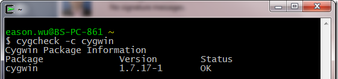
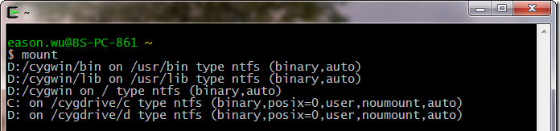

Windows下Git的安装与配置(Cygwin)
摘自：http://www.cnblogs.com/EasonWu/archive/2012/11/27/2791238.html
引子
Git应该是目前最火热的源代码管理软件，虽然是从Linux中走出来的，但在Windows端的表现也是非常抢眼，大有取代SVN之势。
但是刚开始用Git的时候，总感觉不是很顺手，没有SVN好用，在SVN的世界里最出名的客户端管理工具TortoiseSVN，让我们的开发工作变得异常舒适。虽然Tortoise公司也出了tortoisegit， 但因为刚开始对Git的工作原理不是很熟悉，再加上对Linux的白痴水平，结果就是各种不适应。最近接到公司内部一个小工具的开发任务，因为主要是我一 个人开发，可能会在家里进行测试，衡量在三，决定使用Git来管理，其实对于这种项目SVN是最适合的工具，但这次主要出于学习Git的出发点来考虑。这 篇文章说到底是一篇学习Window下Git开发环境搭建的笔记。
软件先行
目前windows平台有两个模拟nix like运行环境的工具：cygwin，msys；Git在cygwin，msys下都有相应的移植版本。现在WIndows下有非常多的Git用户，但Git为什么不出一个Windows Native版呢？虽然我没看过Git的源代码，但网络上有研究过的高人讲，Git里面使用了大量的nix平台的native api，而这些API在Windows下是没有的，所以必须要cygwin、msys这样的一个蹭层来满足软件移植的要求。msysGit上目前Windows上用得非常多的一个基于msys平台的Git移植版本，但个人觉得Cygwin的命令行窗口的功能要比msys好很多，而且Cygwin 下很容易获得用到的开源工具。当然这个要仁者见仁了，总之你觉得那个好就用那一个。
这里主要介绍一下Cygwin下Git的安装与配置。
Cygwin安装
Cygwin 的安装非常简单，先在其官方网站 http://www.cygwin.com/下载安装程序—一个只有几百KB的setup.exe文件，然后即可开始安装。
(1) 安装过程中会让用户选择安装模式：通过网络安装、下载后安装或者通过本地软件包缓存（安装时自动在本地目录下建立的软件包缓存）安装。如果是第一次安装 Cygwin，因为本地尚没有软件包缓存，当然只能选择从网络安装，
(2) 选择安装目录，默认为 C:\cygwin ，如下图所示。这个目录将作为 Cygwin shell 环境的根目录（根卷），Windows 的各个盘符将挂载在根卷的一个特殊目录之下。
(3) 设置本地软件包缓存目录，默认为setup.exe 所处的目录,
(4) 设置网络连接方式是否使用代理等，如图所示。默认会选择第一项：“直接网络连接”。如果一个团队有很多人要使用 Cygwin，架设一个能够提供软件包缓存的 HTTP 代理服务器会节省大量的网络带宽和大量的时间。
(5) 选择一个 Cygwin 源，如图所示。如果在上一个步骤中选择使用 HTTP 代理服务器，就必须选择 HTTP 协议的 Cygwin 源。
(6) 从所选的 Cygwin 源下载软件包索引文件，然后显示软件包管理器界面，我们要在这一步选择安装Git相关的软件包。默认安装的 Cygwin 没有安装 Git 软件包。如果在首次安装过程中忘记通过包管理器选择安装 Git 或其他相关软件包，可以在安装后再次运行 Cygwin 的安装程序 setup.exe 。当再次进入Cygwin 包管理器界面时，在搜索框中输入 git，这里我们需要安装下面几个软件，
- git
- git-completion： 提供 Git 命令的自动补齐功能。安装该软件包时会自动安装其所依赖的 bash-completion 软件包。
- vim： Git 默认的编辑器。
- openssh： SSH 客户端，为访问 SSH 协议的版本库提供支持。
Cygwin 的配置和使用
运行 Cygwin后会进入 shell 环境并见到熟悉的 Linux 提示符，可以通过执行 cygcheck 命令来查看 Cygwin 中安装的软件包的版本。例如，查看 Cygwin 软件包本身的版本：
cygcheck -c cygwin

Cygwin 中访问 Windows 的各个磁盘目录。首先，我们在Cygwin中执行mount这个命令，

也就是说，在 Cygwin 中以路径 /cygdrive/c/Windows来访问Windows 下的 C:\Windows 目录。
设置Cygwin的Home目录
修改 Cygwin 启动的批处理文件（如：C:\cygwin\Cygwin.bat ），在批处理的开头添加如下的一行代码，就可以防止其他软件在 Windows 引入的 HOME 环境变量被带入到 Cygwin 中。
1 | Set HOME=d:\cygwin\home //这个根据你自己的目录来设置 |
命令行补齐忽略文件名大小写
Windows 的文件系统忽略文件名的大小写，在 Cygwin 下最好对命令行补齐进行相关设置，以忽略大小写，这样使用起来更方便。编辑文件 ~/.inputrc ，在其中添加设置“set completion-ignore-case on”，或者取消已有的相关设置前面的井（#）号注释符。修改完毕后，再重新进入 Cygwin，这样就可以实现命令行补齐对文件名大小写的忽略。
Git配置
- 由于在windows平台下，所以可以禁止Git对文件权限的跟踪
1 | git config --system core.fileMode false |
- 解决Git命令输出中文文件名的显示问题
1 | git config --system core.quotepath false |
- Git命令输出中开启颜色显示
1 | git config --system color.ui true |
- 配置username和email
1 2 | git config --global user.name "Jim" git config --global user.email Jim@gmail.com |
- 通过命令来查看Git设置
1 | git config -l |
可以得到如下的结果
1 2 3 4 5 6 7 8 9 10 | user.name=Jim user.email=Jim@gmail.com color.ui=true core.filemode=false core.quotepath=false core.repositoryformatversion=0 core.bare=false core.logallrefupdates=true core.ignorecase=true credential.helper=cache --timeout=3600 |
- 配置alias命令别名
1 2 3 4 5 6 7 | git config --system alias.st status git config --system alias.ci "commit -s" git config --system alias.co checkout git config --system alias.br branch git config --system alias.ll "log --pretty=fuller --stat --graph --decorate" git config --system alias.ls"log --pretty=oneline --graph --decorate" git config --system alias.ss "status -sb" |
Git访问SSH 服务
这里的SSH还是指Cygwin里面的SSH，也就是OpenSSH。这块其实可以参考一下GitHub上的帮助页面 https://help.github.com/articles/generating-ssh-keys
生成SSH密钥对
1 | ssh-keygen -t rsa -C "jim@gmail.com" |
你会看到如下的输出：
1 2 3 4 5 6 7 8 9 10 11 12 13 14 15 16 17 18 19 20 21 | Generating public/privatersa key pair. Enter fileinwhichto save the key (/home/eason.wu/.ssh/id_rsa): Created directory '/home/eason.wu/.ssh'. Enter passphrase (empty forno passphrase): Enter same passphrase again: Your identification has been saved in/home/eason.wu/.ssh/id_rsa. Your public key has been saved in/home/eason.wu/.ssh/id_rsa.pub. The key fingerprint is: 58:7d:74:d9:d6:52:79:24:d7:18:e4:dd:bd:03:28:94 jim@gmail.com The key's randomart image is: +--[ RSA 2048]----+ | .. ..=BB| | .E ..o+=O| | .......o=| | o .. . .| | . S o | | .| | | | | | | +-----------------+ |
连接GitHub
这部分可以参考 <https://help.github.com/articles/generating-ssh-keys.
Clone项目
小结
利用Git来进行源代码管理是一个长期学习的过程，对于Git的理解也必须在不断的使用中体会。 总之， 每天进步一点点。
作者：坊间小毅
出处：http://www.cnblogs.com/EasonWu
本文版权归作者和博客园共有，欢迎转载，但未经作者同意必须保留此段声明，且在文章页面明显位置给出原文连接，否则保留追究法律责任的权利。